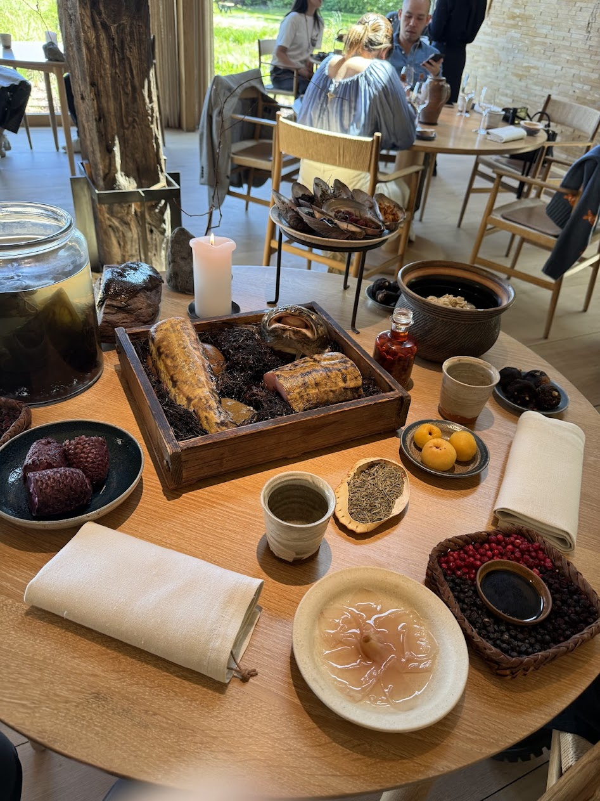

Noma
I recently made a trip to Copenhagen to run the 2025 Copenhagen Marathon and leading up to the race, I tacked on some additional traveling in London and Oslo. Even prior to my last trip to Copenhagen in 2022, I knew the city was home to Noma, the “best restaurant in the world”. I knew multiple friends who had gotten a reservation and made trips to Copenhagen just to check out the experience before, so after I got to Europe, I was a bit curious if I could get a reservation on late notice myself. As luck would have it, my friend and I signed up for Tock (similar to Resy) notifications and got a slot off a last minute cancellation two days before, and I had ten minutes to decide whether I wanted to go. Given that (1) I had heard positive reviews about this restaurant for years, (2) people have been making entire trips to Copenhagen just to visit this restaurant and I was already going to be in the area, and (3) I like trying new things, I decided after maybe 3-4 minutes that going would be the right call, and we secured the res.
Biking to Noma + restaurant entrance
My travel style is generally pretty flexible, and originally, I was going to split up the bus / train ride from Oslo to Copenhagen (~8 hour journey) with an overnight stay in Gothenberg, Sweden (which is conveniently located around halfway between the two cities). When we got the lunch reservation, however, I decided it wasn’t worth the risk of trying to make it to Copenhagen the morning of (in case there were any transit delays) and potentially missing the reservation altogether. So I decided it would be better to arrive the night before, which is what I did. After a lazy Friday morning, I used the local Donkey Republic bikeshare to ride over to the restaurant located at Refshalevej, in a formerly industrial turned new hip area annexed by Amager Island.
Indoor + outdoor waiting areas
After arriving at the restaurant, there was a sunroom waiting area where we checked in and waited to be brought to the main dining area. Before going to the restaurant, I had done some research and watched a video on René Redzepi, the chef and co-owner of the restaurant. As we waited in the secondary outdoor waiting area, René himself came out – the other guests seemed either surprised or didn’t recognize him, so I decided I should break the ice and ask for a picture with him, which would also be a nice addition to my selfie collection. During this time, his dogs also came out and roamed around the premises, which further contributed to the homely vibes. Initially, I felt a little underdressed for the occasion since I didn’t expect to be going to some fancy Michelin 3-star restaurant on this trip, but after meeting René, I realized I was dressed no more casually than him or some of the other guests, and plus I noticed Arcteryx (and Carhartt) seemed quite popular in the Nordics anyways.
Me, René Redzepi, and his dog
At last, we were led into the dining area, where each guest got a reception by the staff as they walked to their assigned table. There were about fifteen tables in the dining area which ranged from seating 2-8 guests, as well as one large shared table that guests can sign up for to be seated with other randos (which would also have been a cool way to meet people). As we sat down, the staff brought out a spread of all the ingredients that were going to be used for the preparation for the meal. This included a large king crab which I asked to take a picture with! The waiters and waitresses were all super friendly, and it was clear they came from all around the world for an opportunity to work at this esteemed restaurant. When I mentioned I was running the marathon, I got a lot of questions from the staff about my running experiences, with several of them sharing that they had run their own half-marathons recently as well.

Ingredient spread and a king crab!
They then took away the ingredients and we started getting served the food. The main idea behind the food at Noma is that it was one of the original pioneers of a new culinary movement called New Nordic Cuisine, with the main principle being the usage of local, in-season ingredients for the preparation of the dishes. Noma has three “seasons” (Ocean, Vegetable, Forest & Game), where they serve different types of food, with my visit taking place during the Ocean Season – hence the focus on seafood dishes. With each dish being served, there was a lengthy explanation of the origins of the dishes as well as how it was intended to be consumed, either by a waiter, waitress, or chef. We also got the juice pairing, so each dish came with a juice that was intended to complement the dish. In particular, Noma has its own fermentation lab, so there seemed to be a lot of experimentation with fermentation in the juices. All in all, there were 16 dishes that were served over the course of around 3 and a half hours.